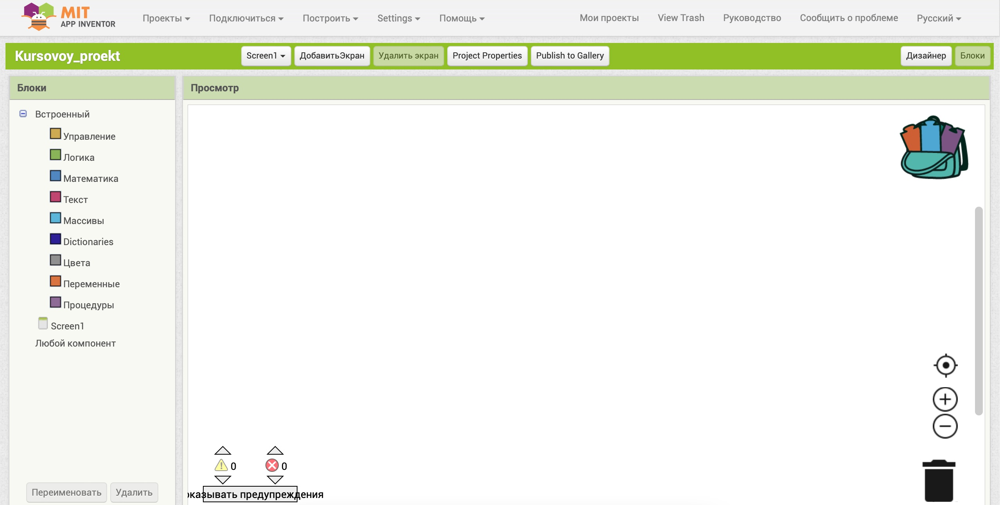
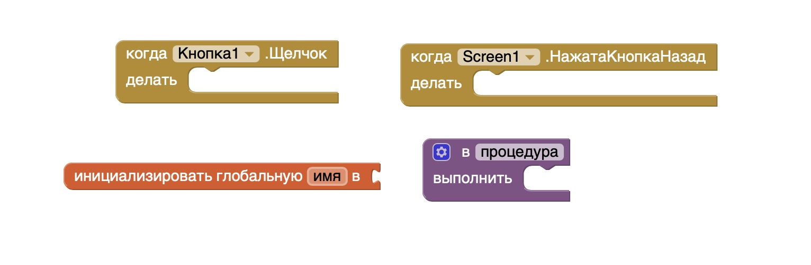
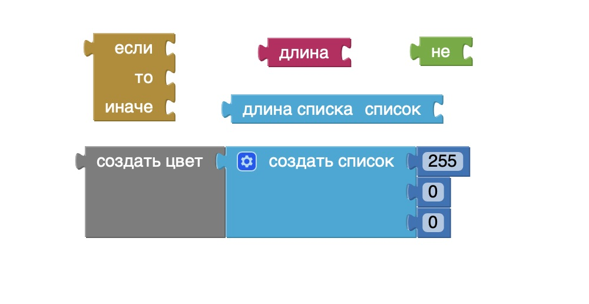
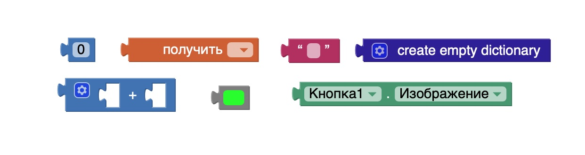
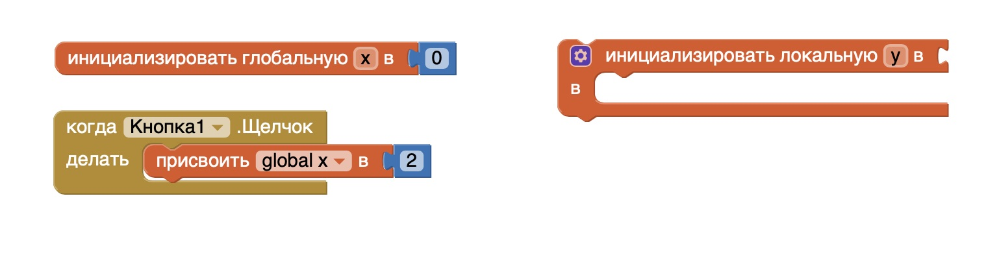
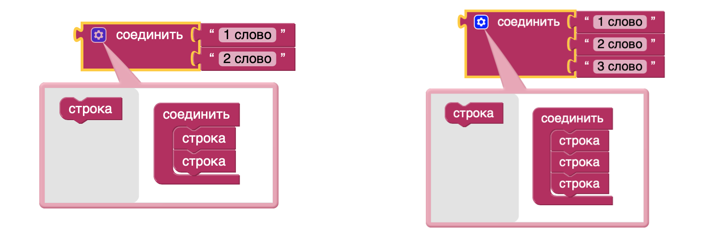

Работа в режиме "Блоки" в MIT App Inventor
Режим "Блоки"
Режим "Блоки" в MIT App Inventor позволяет создавать программную логику приложения с помощью визуальных элементов, похожих на пазлы. Эти блоки соединяются между собой, чтобы задавать функционал приложения. Каждый блок представляет собой действие, условие, цикл или другую программную конструкцию.
Основные разделы блоков
В режиме "Блоки" доступны следующие группы блоков:
- Управление: содержит блоки для создания условий (например, "если...то", циклы).
- Логика: включает логические операции (например, И, ИЛИ).
- Математика: предоставляет математические операции и вычисления.
- Текст: блоки для работы со строками текста.
- Массивы: управление списками и массивами данных.
- Dictionaries: работа со структурами типа "ключ-значение".
- Переменные: создание и использование переменных.
- Процедуры: создание процедур для повторного использования кода.
Основные типы блоков
Блоки компонент бывают следующих видов:
- Обработчик (слушатель) события компоненты (коричневый цвет)
- Вызов процедур или команды для компоненты (фиолетовый цвет)
- Геттер, получатель свойства компоненты (зелёный цвет)
- Сеттер, установщик свойства компоненты (зелёный цвет)
- Геттеры и сеттеры для переменных (оранжевый цвет)
У встроенных блоков свои отдельные цвета:
- математические, массивы и словари – оттенки синего
- логика – зелёный
- текст – бордовый
- управление – коричневый
Примеры использования блоков
Блоки можно комбинировать для создания различных функциональностей приложения. Например:
- Блок "если...то" позволяет задать условное выполнение кода.
- Циклы "for" и "while" используются для повторяющихся операций.
- С помощью блоков переменных можно хранить данные и изменять их по мере работы программы.
Способы крепления блоков
В MIT App Inventor блоки соединяются друг с другом с помощью специальной системы крепления, напоминающей пазлы. Это гарантирует, что можно соединить только совместимые блоки. Крепление блоков позволяет организовать структуру программы визуально и логически, упрощая понимание логики кода. Например, блоки действий можно вкладывать в блоки условий или циклов, формируя цепочку действий при выполнении определенного условия.
Классификация блоков по уровням
В MIT App Inventor блоки можно классифицировать по уровням в зависимости от их функциональности и возможностей взаимодействия:
- Блоки 1-го уровня: это независимые блоки, которые могут существовать без привязки к другим блокам. Примеры таких блоков включают инициализацию переменных или объявления процедур. Эти блоки служат отправной точкой для логики приложения. 
- Блоки 2-го уровня первого типа: данные блоки вставляются в независимые блоки и часто используются для выполнения команд. Например, это могут быть блоки, которые выполняют конкретные действия или изменяют значения переменных. Они имеют выемку сверху и крепление снизу, позволяя добавлять дополнительные элементы логики.
- Блоки 2-го уровня второго типа: такие блоки также могут быть вставлены в независимые блоки, но, в отличие от первого типа, они возвращают результат. Например, это могут быть блоки, которые получают значения переменных. Они имеют выступ слева и выемку справа. 
- Блоки 3-го уровня: это конечные блоки, которые не требуют дополнительного крепления, например, блоки значений или логические переменные. У таких блоков крепление присутствует только с одной стороны, что делает их "завершающими" элементами в логической цепочке. 

Переменные
Переменные в MIT App Inventor позволяют сохранять данные, которые могут изменяться в процессе работы приложения. С помощью блоков для переменных можно задавать начальные значения, изменять и использовать их в логике приложения. Переменные могут быть глобальными, доступными по всему проекту, или локальными, используемыми только в определенном контексте. Эта гибкость позволяет создавать сложные сценарии взаимодействия и управления компонентами приложения.
Мутаторы
Мутаторы предоставляют возможность модифицировать блоки для более сложной логики. Например, блок "если...то" может быть расширен мутаторами для добавления дополнительных веток "иначе" или "иначе если". Это позволяет строить гибкие логические конструкции и адаптировать код к различным сценариям выполнения. Мутаторы дают возможность динамически изменять структуру блоков без необходимости создавать новые блоки с нуля.
